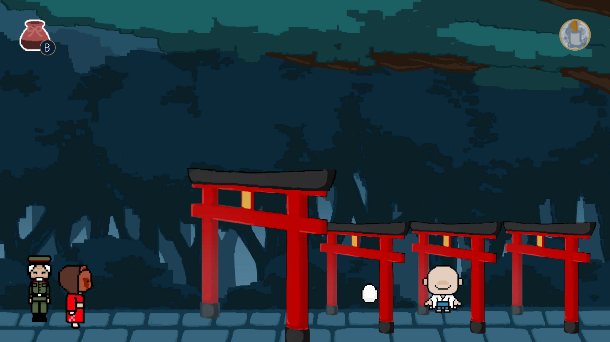

Overview
学校のゲームジャムイベントで作成したゲームです。 2Dアドベンチャーゲームです。
Information
- 担当：会話・フラグシステム
- 制作期間：4日
- 制作人数：約5～10人
- 使用技術：Unity / C# / GitHub
Point
プランナーの要望に応えれるよう、拡張性と効率を両立しました。
Googleスプレッドシートを使って会話システムを管理するようにしました。

学校のゲームジャムイベントで作成したゲームです。 2Dアドベンチャーゲームです。
プランナーの要望に応えれるよう、拡張性と効率を両立しました。
Googleスプレッドシートを使って会話システムを管理するようにしました。
